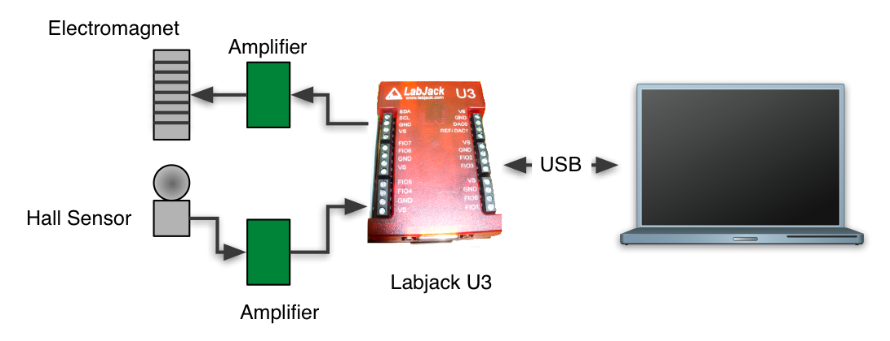

This tutorial show you how to control external hardware. It is combined with a simulation so that you can observe both the real system and the simulated system at the same time.
An electromagnet can be used to lift a steel ball. This is used in many applications. In most cases the goal is to lift metal objects. In this case we want to hold the ball at a fixed distance from the magnet. As it turns out this situation is not stable. While you can find a current that will hold the ball against the pull of gravity any small movement of the ball will cause it either to fall or to attach itself to the magnet. For that reason we need to sense the position of the ball and use a feedback control system to keep its position.
Click on a link to learn more.
The hardware consists of a steel ball, an electromagnet, a Hall sensor and interface electronics.
Click on a link to learn more.
A Labjack U3 USB box is used for input and output. Measurements from the Hall sensor come in using the A/D converter and outputs use the D/A converter.
More information on Labjack products can be found at www.labjack.com
Click on a link to learn more.
The controller is built into the Labjack data source plugin.
Click on a link to learn more.